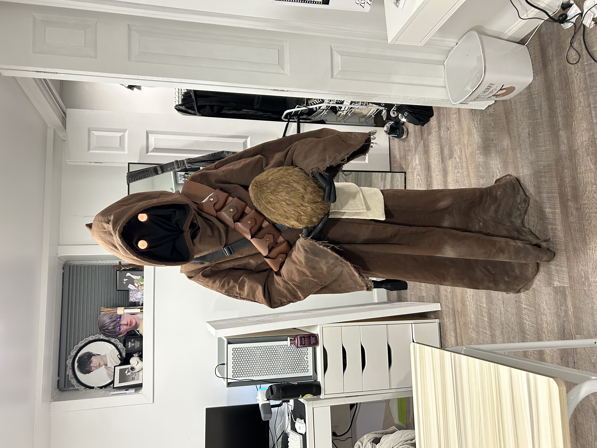
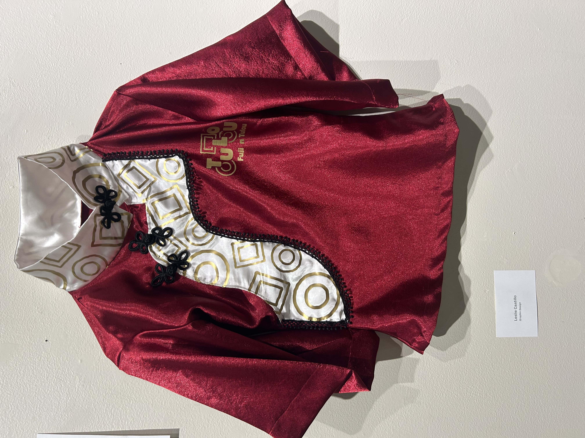
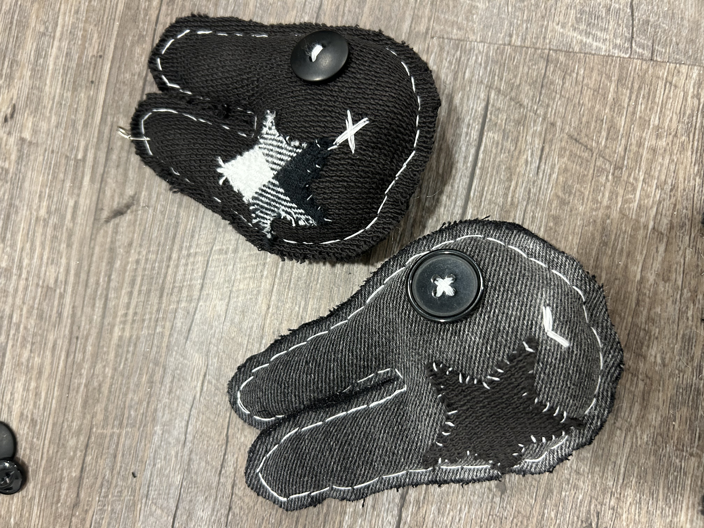
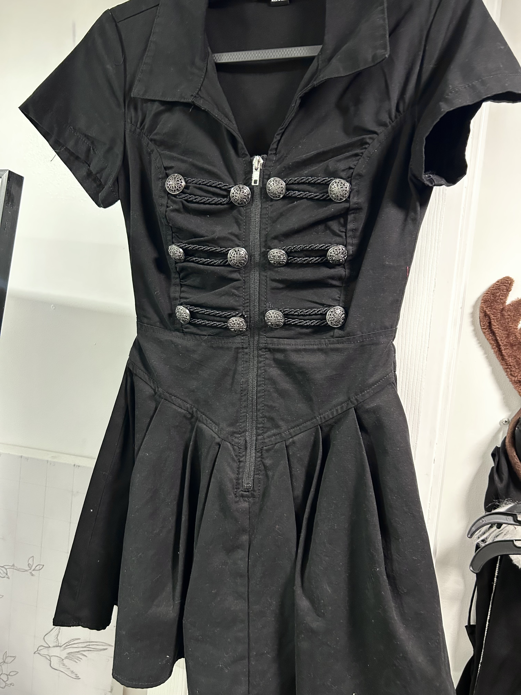

Sewing has been around for thousands of years, making it one of the oldest skills humans have used to create and repair things. Long before modern sewing machines and ready-made clothing, people used needles made from materials like bone and thread made from plants or animal fibers to create clothing, blankets, and other everyday items. Today, sewing is still all around us, even if we don’t always think about it. Take a moment to look at what you’re wearing right now, your shirt, pants, jacket, or even the fabric on the chair you have at home. Almost every piece has been cut, stitched, and put together through some form of sewing. It’s easy to overlook, but sewing has played an important role in our everyday lives for generations, and learning how to sew gives us a better appreciation for the clothes and objects we use every day.
Sewing is a skill that I think everyone should learn, whether you’re completely new to it or already have some experience. It’s a useful skill that can help you repair clothes, make something you need, or even create something completely your own. But sewing is also a great way to be creative and experiment with different fabrics, designs, and ideas. On this website you can find free and beginner-friendly patterns to help you get started as well as websites with free patterns. Whether you want to make something simple or try out a new project, I hope you find something here that inspires you to pick up a needle and thread and start creating!
My sewing projects!



